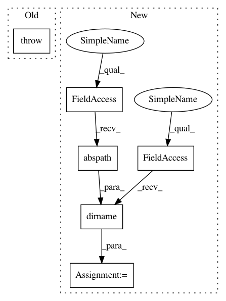

a98ad8afec08c9d6172cc1d705467985f3e9dd36,tests/test_apiconnector.py,TestAPIConnector,test_get_cached_dataset,#TestAPIConnector#,84
Before Change
raise Exception()
def test_get_cached_dataset(self):
raise Exception()
def test_get_cached_tasks(self):
raise Exception()
After Change
self.assertIsInstance(datasets.values()[0], OpenMLDataset)
def test_get_cached_dataset(self):
workdir = os.path.dirname(os.path.abspath(__file__))
workdir = os.path.join(workdir, "files")
with mock.patch.object(APIConnector, "_perform_api_call") as api_mock:
api_mock.return_value = 400, \
In pattern: SUPERPATTERN
Frequency: 3
Non-data size: 6
Instances
Project Name: openml/openml-python
Commit Name: a98ad8afec08c9d6172cc1d705467985f3e9dd36
Time: 2015-03-02
Author: feurerm@informatik.uni-freiburg.de
File Name: tests/test_apiconnector.py
Class Name: TestAPIConnector
Method Name: test_get_cached_dataset
Project Name: regel/loudml
Commit Name: e7e01290997f66471c08848ee0a968e2526b4b9b
Time: 2019-09-29
Author: sebastien.regel@gmail.com
File Name: loudml/loudml/_version.py
Class Name:
Method Name:
Project Name: openml/openml-python
Commit Name: a98ad8afec08c9d6172cc1d705467985f3e9dd36
Time: 2015-03-02
Author: feurerm@informatik.uni-freiburg.de
File Name: tests/test_apiconnector.py
Class Name: TestAPIConnector
Method Name: test_get_cached_datasets
Project Name: openml/openml-python
Commit Name: a98ad8afec08c9d6172cc1d705467985f3e9dd36
Time: 2015-03-02
Author: feurerm@informatik.uni-freiburg.de
File Name: tests/test_apiconnector.py
Class Name: TestAPIConnector
Method Name: test_get_cached_dataset